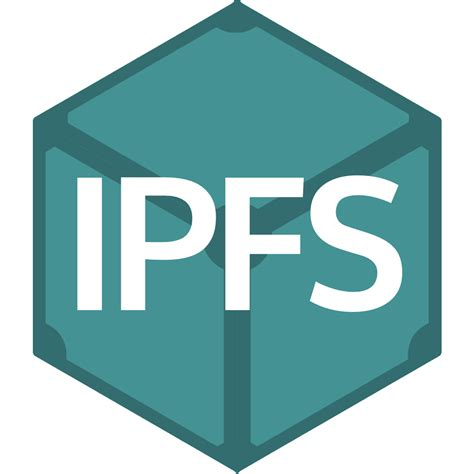

IPFS

What is it?
IPFS is a network protocol that enables the exchange of data in a decentralized network.
Integration with Lokal
Lokal supports IPFS by including a node and a pinning service that can be used to access and store data on the IPFS network.
To access the network, users will need a special web browser with support for IPFS. The browser used is called Agregore Mobile. You can get the latest version of Agregore Mobile here. Download the APK and upload it to your main Lokal Wordpress instance.
You should also inform users about the ability to use IPFS on the Lokal network. At a minimum you should add instructions for downloading and installing Agregore Mobile on a mobile device and using the IPFS network. The section below has some copy you can use.
Next, you need to choose a username and password that will be used to access the IPFS pinning service. This needs to be configured in the variables file as "http basic auth" credentials.
There are lots of content and applications you may wish to add to the pinning service for users. We recommend uploading and pinning this markdown blog that runs on IPFS. It will enable users to create and share their own content on the IPFS network.
To upload and pin the blog:
- clone the github repository
- update
upload.shto point to the correct address for the IPFS node (ipfs.lokal.network) - run
upload.sh - make a note of the resulting ipfs:// and ipns:// address
Upload pinning frontend and pin pinning frontend :)
- clone the GitHub repository: https://github.com/AgregoreWeb/pin-manager
- copy upload.sh from above and replace all instances of "ipmb" with "pinning-service".
- run upload.sh and again make a note of the ipfs:// and ipns:// address
- use Agregore Mobile to go to the ipns:// address. This assumes you've installed Agregore Mobile and you're connected to the Lokal wifi network.
- add the pinning server to the pinning service
- pin the ipfs address on the pinning service
You can also upload other content: - here is a script for uploading project Gutenberg ebooks to your node
The following copy is intended to be put on the main Wordpress site of the Lokal instance. This serves as a way to explain to users what IPFS is and how to use it. Remember to also upload the Agregore Mobile APK and link to it.
Copy for Lokal portal
IPFS is a network protocol that enables a decentralized exchange of information.
Getting started: Install Agregore Mobile
To get started using IPFS, you will need to install a special browser called Agregore Mobile by following these steps: - Update your mobile phone to install applications that isn't on the app store: - Ex. for Umidigi devices: Apps & Notifications -> Advanced -> Special app access -> Install unknown apps -> allow chrome - or Xiaomi: Settings -> Privacy protection -> Advanced -> Special app access -> Install unknown apps -> allow chrome - Click on this link (insert link to the uploaded Agregore Mobile apk here) and install the application - Once installed, you can start using the browser to explore the IPFS network.
Things to do
Create and share your own blog
- go to (insert ipns address for the markdown blog here)
- start writing blog post, take picture and video
- publish your site
- share the link with other people. As long as they're also connected to the Lokal wifi, they will be able to load your blog
Browse other IPFS site when you have an internet connection
- Go to ipns://ipfs.io - this is the main IPFS website